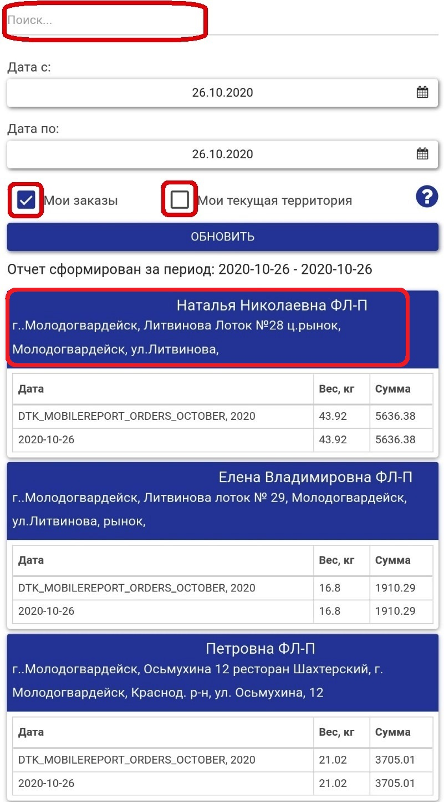

Начало работы с КПК
Перед началом работы необходимо выполнить синхронизацию данных.
Для этого необходимо нажать на кнопку синхронизации 1
в правом верхнем углу на "Домашнем экране"" в КПК. Или нажать кнопку "Меню"
2 в левом верхнем углу приложения.
И в открывшемся окне выбираем пункт - Синхронизация.
Главный (Домашний) экран приложения для КПК
На главном экране приложения для КПК отображается следующая информация

- Сотрудник - Код сотрудника и ФИО сотрудника
- Документов - Количество документов на текущее время. Набитые заказы,
приходные кассовые ордеры, возвраты и т. п.
- План на сегодня - Количество запланированных визитов на сегодняшний день
- Посещено - Количество посещенных торговых точек на текущее время
- Осталось посетить - Количество не посещенных торговых точек на текущее время,
т. е. сколько еще торговых точек осталось посетить сегодня, исходя из плана и факта
посещенных торговых точек
- Кол-во ТТ с заказом - Сколько торговых точек сработало по заказу
- Кол-во заказов - Сколько всего за день набито накладных (заявок)
- Сумма заказов - На какую сумму за сегодня набито заказов в КПК
- Общий вес заказов - Какой общий вес всех набитых за сегодня заказов
- Кол-во возвратов - Сколько набито возвратов за сегодня
- Сумма возвратов - На какую сумму набито возвратов за сегодня
- Общий вес возвратов - Какой общий вес всех набитых возвратов за сегодня
- Оплачено сегодня - На какую сумму набито приходных кассовых ордеров за сегодня
Статусы торговых точек
На главном экране торговые точки имеют различные статусы:
- Зеленая галочка – визит завершен и отправлен на сервер
- Желтый замок – визит не завершен и отправлен на сервер, требует завершения
- Серый плюс, зеленая надпись – точка добавлена на маршрут, не посещена
- Зеленый замок – визит не завершен и не отправлен на сервер
- Серый плюс, черная надпись – точка стоит в плане визитов, не посещена
- Зеленый документ – визит завершен, не отправлен на сервер
Статус клиента отображает статус его последнего визита.
Визит в торговую точку
Для начала работы с торговой точкой необходимо выбрать конкретную
тоговую точку из списка в нижней части "Домашнего экрана". Или воспользоваться
поиском в правой верхней части экрана для поиска конкретной торговой точки.
После выбора торговой точки открывается "Домашний экран" торговый точки.
Аналогично "Главному экрану" приложения на "Домашнем экране" торговой точки отображается
информация по конкретной торговой точке.
- Кол-во заказов - Сколько всего за день набито накладных (заявок)
- Сумма заказов - На какую сумму за сегодня набито заказов в КПК
- Общий вес заказов - Какой общий вес всех набитых за сегодня заказов
- Кол-во возвратов - Сколько набито возвратов за сегодня
- Сумма возвратов - На какую сумму набито возвратов за сегодня
- Общий вес возвратов - Какой общий вес всех набитых возвратов за сегодня
- Общая сумма долга - Какая общая сумма задолженности по конкретной торговой точке (конкертному адресу)
- Просроченный долг - Какая сумма из общего долга в просрочке
- Оплачено сегодня - На какую сумму набито приходных кассовых ордеров за сегодня

На экране выбора визита можно выбрать один из вариантов рабочего процесса, который
предусмотрен для данной торговой точки:
- Заказ по телефону
- Визит торгового представителя
На экране отображается история прошлых визитов с возможностью просмотра каждого из них.
Статусы визитов аналогичны статусам клиентов.
поиск торговых точек
Для поиска торговых точек необходимо нажать накнопку поиска в правом верхнем углу.
Дополнительно используются встроеные фильтры по дням и клиентам.
При использовании фильтра "Все клиенты" можно осуществить отбор по посещенным и
непосещенным клиентам.
При использовании фильтра "Дата - День" можно осуществить отбор по конкретному дню
недели в рамках двухнедельного цикла или выбрать всех клиентов.
Так же можно использовать сортировку, нажав на самый правый фильтр. Например
соортировку по алфавиту. Например по названию ФЛП или адресу торговой точки.
заказ по телефону
Рабочий процесс "Заказ по телефону" не предусматривает снятие координат
торговой точки для контроля посещения торговых точек торговым представителем.
В рамках заказа по телефону торговый представитель может:
- Создать заказ
- Создать возврат
- Внести оплату (Донецк - данный блок в разработке)
визит торгового представителя
В рамках данного рабочего процесса доступен следющий функционал:
- Снять координаты торговой точки (Начало визита)
- Создать заказ
- Снять остатки
- Создать возврат
- Внести оплату (Донецк - данный блок в разработке)
- Сделать фото отчёт
- Снять координаты торговой точки (завершение визита)
начало визита
Для начала "Визита ТП" необходимо считать координаты торговой точки. Для это необходимо
нажать на "Местоположение". Если по каким либо причитнам считать координаты не удалось,
необходимо нажать на "Фотография" и сделать подтверждающее фото. Например фото фасада
торговой точки или фото вывески торговой точки. После прохождения верификации координат
активизируются следующие блоки рабочего процесса.
создать заказ
Для создания заказа необходимо нажать "Создать заказ"
В рамках создания заказа доступен следующий функционал:
- Ввод заказа сделан максимально быстрым
- Возможно сделать несколько заказов на 1 ТТ
- Возможно выбрать прайс
- Возможно выбрать дату доставки
- Есть фильтры по производителям/брендам/категориям
- Возможно выбрать форму оплаты (наличный или безналичный рассчёт)
- Ввод заказа максимально ускорен при использовании экранной клавиатуры
- Окно истории может отображать историю заказов/продаж/остатков/возвратов и объема
проданного из торговой точки за произвольный период времени. История показывается
по каждому продукту. Окно истории можно прокручивать пальцем и видеть все данные
очень быстро
- Нижний блок – отображает остатки на складе и суммарную информацию по заказу
Описание элементов окна заказа приложения:
- Выбор прайса, типа цен для конкретной торговой точки
- Выбор предприятия
- Фильтр "Производитель"
- Кнопка поиска товаров
- Сделать фото
- Вспомагательное меню
- История - вкл. или откл. отображение истории заказов
- Комментарий - добавить комментарий к заказу
- Очистить - удалить все набранные позиции в заказе
- Выбор даты доставки заказа
- Выбор формы оплаты заказа
- Факт с документами
- Факт без документов
- Отсрочка с документами
- Отсрочка без документов
- Выбор склада с которого отгружается заказ
- Фильтр "Группы товаров"
- Фильтр по "Продуктам"
- Все продукты
- Продеваемые - те продукты, которые уже продавались в данную торговую точку
- Набранные - те продукты, которые уже набиты в рамках текущего заказа
- Ненулевые остатки на складе - те товары, которые реально есть на складе в наличии на остатках
- Остаток конкретного товара на складе на определенную дату (по умолчанию на завтра)
- На какую дату видны остатки на складе (по умолчанию на завтра)
- Цена конкретного (выбранного в данный момент) товара
- Сумма набранного заказа
- Вес набранного заказа
снятие остатков
Для снятия остатков в торговой точке необходимо нажать "Создать остаток в ТТ"
Снятие остатков в торговой точке аналогично набиванию самого заказа. Все блоки и
элементы окна снятия остатков идентичны окну набивания заказа.
возврат из торговой точки
Данный блок находится на стадии согласования и разработки.
внесение оплаты
Для внесения оплаты необходимо нажать "Плюс" - кнопка создания оплаты.
Описание элементов главного окна внесения оплаты:
- Общая задолженность по торговой точке
- Общая сумма изначально отгруженных накладных
- Общая сумма, оплаченная по всем не закрытым накладным
- Общая сумма, оплаченная за сегодня (за текущий визит)
В открывшемся окне отображается детальная информация по каждой накладной по конкретной
торговой точке. В рамках данного адреса. Если у клиента несколько адресов (торговых точек),
то данные по другому адресу, в рамках текущего визита, не отображаются.
Описание элементов окна внесения оплаты в разрезе накладных:
- Номер накладной
- Прайс, по которому отгружена накалдная
- Дата отгрузки накладной
- Сумма долга по накладной. Сумма, которую необходимо оплатить
- Изначальная сумма накалдной
- Общая (изначальная) сумма всех отгруженных накладных
- Общая сумма долга по всем накладным по текущей торговой точке
- Общая сумма, оплаченная по всем не закрытым накладным
После нажатия кнопки "Оплатить" открывается окно внесения оплаты, в котором сумма накладной
подтягивается автоматически. При необходимости внести необходимую сумму можно в ручном режиме.
Например клиент оплатил не всю накладную, а только половину.
завершение визита
Для завершения "Визита ТП" необходимо повторно считать координаты торговой точки. Для это необходимо
нажать на "Местоположение". Если по каким либо причитнам считать координаты не удалось,
необходимо нажать на "Фотография" и сделать подтверждающее фото. Например фото фасада
торговой точки или фото вывески торговой точки.
отчёт объем заказов
Данный отчёт позволяет просмотреть сколько каких позиций было набито в КПК за сегодня
или за определенный период.
Открываем главное меню
и выбираем пункт "Мои файлы"
В открывшемся окне выбираем отчёт - "Объём заказов"

Для формирования отчёта доступны следующие фильтры:
- Выбор периода отбора
- Производитель
- Группа товаров
- Продукт
- Без применения фильтров
Устанавливаем необходимы параметры отбора посредством установки соответствующей галочки
или посредством выбора необходимого пункта из выпадающего списка
и нажимаем "Сформировать отчёт".
Пример сформированного отчёта с применением фильтра "Производитель"
Пример сформированного отчёта с применением фильтра "Группа товаров"
Пример сформированного отчёта с применением фильтра "Продукт"
Для того что бы посмотреть количество штук или блочков по конкретной позиции
необходимо нажать на синий плюсик напротив необходимой позиции. Или перевернуть телефон
на 90 градусов.
В каждом сформированном отчёте доступно поле поиска.
отчёт по заказам
Данный отчёт показывает все набитые заказы по клиенту за определённый период.
Заказ можно просмотреть в разрезе каждой набитой позиции.
По умолчанию выбран период за последнюю неделю.
Открываем главное меню
и выбираем пункт "Мои файлы"
В открывшемся окне выбираем отчёт - "Отчёт по заказам"
В открывшемся окне отображается список заказов в разрезе каждого клиента и
каждого адреса.

Кликнув на данные по клиенту открывается сам заказ. Если заказов несколько,
то открывается окно со всеми заказами за выбранный период.
В каждом сформированном отчёте доступно поле поиска.
Информация по настройкам формирования отчета
-
Возможность выбора периода за который необходимо сформировать отчёт
- "Мои заказы ВКЛ + Моя текущая территория ВКЛ" - Отчёт будет сформирован по
Вашим заказам согласно выбранному периоду по клиентам которые на данный момент
привязаны к Вашей территории
-
"Мои заказы ВКЛ + Моя текущая территория ВЫКЛ" - Отчёт будет сформирован по Вашим
заказам согласно выбранному периоду по всем клиентам. (даже если сейчас клиент
не привязан к Вашей текущей территории)
-
"Мои заказы ВЫКЛ + Моя текущая территория ВКЛ" - Отчёт будет сформирован по заказам
всех торговых агентов согласно выбранному периоду, по всем клиентам которые на данный
момент привязаны к Вашей территории. Отчет отображает весь оборот клиента, а не
только который обеспечиваете Вы
-
"Мои заказы ВЫКЛ + Моя текущая территория ВЫКЛ" - Отчёт будет сформирован по заказам
всех торговых агентов согласно выбранному периоду, по клиентам которые были привязаны
к Вашей территории за выбранный период. В отличии от отчета в п. 4. Данный отчет
отображает оборот по всем клиентам которые были привязаны к Вашей территории за
выбранный период. (даже если сейчас клиент не привязан к Вашей текущей территории)
важно!
При изменении настроек формирования отчёта – необходимо нажать кнопку «Обновить» - для
обновления данных в отчёте, согласно выбранных настроек.
отчёт по отгрузкам
Отчёт позволяет посмотреть продажи по клиенту за определенный период. В разрезе каждой
конкретной накладной можно просмотреть продажи по определённой позиции.
Отчёт показывает именно продажи, а не заказы. То есть не то, что было набито в КПК, а
именно то, что реально поехало клиенту (данные из 1С).
По умолчанию выбран период за последнюю неделю.
Открываем главное меню
и выбираем пункт "Мои файлы"
В открывшемся окне выбираем отчёт - "Отчёт по отгрузкам"
В открывшемся окне отображается список отгрузок в разрезе каждого клиента и
каждого адреса.
Кликнув на данные по клиенту открывается сама отгрузка. Если отгрузок несколько,
то открывается окно со всеми отгрузками за выбранный период.
В каждом сформированном отчёте доступно поле поиска.
Информация по настройкам формирования отчёта
-
Возможность выбора периода за который необходимо сформировать отчёт
-
"Мои отгрузки ВКЛ + Моя текущая территория ВКЛ" - Отчёт будет сформирован
по Вашим отгрузкам согласно выбранному периоду по клиентам которые на данный
момент привязаны к Вашей территории
-
"Мои отгрузки ВКЛ + Моя текущая территория ВЫКЛ" - Отчёт будет сформирован по
Вашим отгрузкам согласно выбранному периоду по всем клиентам . (даже если
сейчас клиент не привязан к Вашей текущей территории)
-
"Мои отгрузки ВЫКЛ + Моя текущая территория ВКЛ" - Отчёт будет сформирован по
отгрузкам всех агентов дистрибьютора согласно выбранному периоду, по всем клиентам
которые на данный момент привязаны к Вашей территории. Отчет отображает весь оборот клиента,
а не только который обеспечиваете Вы
-
"Мои отгрузки ВЫКЛ + Моя текущая территория ВЫКЛ" - Отчёт будет сформирован по отгрузкам
всех торговых агентов согласно выбранному периоду, по клиентам которые были привязаны к Вашей
территории за выбранный период. В отличии от отчета в п. 4. данный отчёт отображает оборот по
всем клиентам которые были привязаны к Вашей территории за выбранный период. (даже если сейчас
клиент не привязан к Вашей текущей территории)
важно!
При изменении настроек формирования отчёта – необходимо нажать кнопку «Обновить» - для
обновления данных в отчёте, согласно выбранных настроек.
объём реализации
Данный отчёт позволяет просмотреть сколько каких позиций (итого) было отгружено
(продано) за определенный период.
Открываем главное меню
и выбираем пункт "Мои файлы"
В открывшемся окне выбираем отчёт - "объём реализации"
Для формирования отчёта доступны следующие фильтры:
- Выбор периода отбора
- Производитель
- Группа товаров
- Продукт
- Без применения фильтров
Устанавливаем необходимы параметры отбора посредством установки соответствующей галочки
или посредством выбора необходимого пункта из выпадающего списка
и нажимаем "Сформировать отчёт".
Пример сформированного отчёта с применением фильтра "Производитель"
Пример сформированного отчёта с применением фильтра "Группа товаров"
Пример сформированного отчёта с применением фильтра "Продукт"
В каждом сформированном отчёте доступно поле поиска.
дебиторская задолженность
Для формирования дебиторской задолженности открываем главное меню
и выбираем пункт "Мои файлы"
В открывшемся окне выбираем отчёт - "Дебиторская задолженность"
Описание элементов окна дебиторской задолженности:
- Номер накладной
- Название документа
- Дата наступления платежа - дата отгрузки накладной плюс
отсрочка по договору
- Количество дней просрочки дебиторской задолженности -
на сколько дней клиент просрочил оплату по накладной
- Общий дебет - изначальная сумма отгруженных накладных
- Просроченный дебет - остаток долга по отгруженным накладным
- % просроченного дебета - остаток долга по накладным от общего
количества отгруженных накладных в процентном выражении
Для удобства использования можно воспользоваться полем поиска.
реестр оплат
Для формирования отчёта "Реестр оплат" открываем главное меню
и выбираем пункт "Мои файлы"
В открывшемся окне выбираем отчёт - "Реестр оплат"
В открывшемся окне выводится список набитых за сегодня приходных кассовых ордеров.
При необходимости можно выбрать необходимый период и нажать кнопку обновить.
Скачать приложение для КПК
Ссылка на установочный файл приложения для КПК
Основная - Скачать - Z.apk
Дополнительная - Скачать - Z1.apk